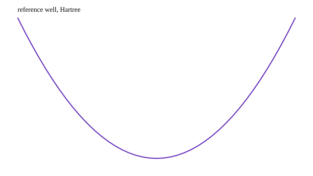

Use cpmdc as an ASE calculator¶
cpmdc.ase.CPMDCCalculator is an ASE calculator that evaluates each step in the
Python process, through one cpmdc session.
Set atoms.calc to it as to any other ASE calculator: ASE’s optimizers, cell
filters, molecular dynamics, and trajectory files use it unchanged.
Importing cpmdc.ase registers CPMDCCalculator under "cpmdc" with
ase.calculators.calculator.register_calculator_class, so
get_calculator_class("cpmdc") returns it, and an installed package also
exposes cpmdc.ase in the ase.plugins entry-point group.
The calculator’s name is "cpmdc", the registered name, so the name that a
trajectory or an ASE database row records is one that get_calculator_class
loads.
ASE releases that ship
ase._4.plugins (3.29 and later) list the calculator in ase._4.plugins.plugins.calculators
whichever of cpmdc.ase and ase._4.plugins is imported first; earlier
releases have no plugin API and use only the registry.
It starts no cpmd.x process and writes no input file.
Call cpmdc from Python covers Session and Potential,
the same library without ASE.
Make the parameters files¶
The calculator takes the method from a serialized CPMDParams message: the
functional, the cutoff, the charge, the multiplicity, the pseudopotentials, and
the boundary conditions of an isolated system.
Write a CPMDParams message explains the text
form.
These commands encode the isolated and the periodic water of a checkout at
$CPMDC into the working directory:
schema=$(python3 -c "import cpmdc; print(cpmdc.find_schema())")
capnp encode "$schema" CPMDParams < "$CPMDC/tests/water_blyp_params.capnp.txt" > water.params.bin
capnp encode "$schema" CPMDParams < "$CPMDC/tests/water_blyp_periodic_params.capnp.txt" > water.periodic.bin
water.params.bin is one molecule with SYMMETRY 0 and the Hockney Poisson
solver.
water.periodic.bin is a simple cubic cell, SYMMETRY 1, which gives a stress
tensor.
The examples on this page run on the reference evaluator of the default build
and of the wheel.
On OpenCPMD they need CPMDC_LIBRARY to name the build and CPMDC_PSEUDO_DIR
to name the pseudopotential directory.
Evaluate a structure¶
from ase import Atoms
from cpmdc.ase import CPMDCCalculator
water = [[0.0, 0.0, 0.1173], [0.0, 0.7572, -0.4692], [0.0, -0.7572, -0.4692]]
atoms = Atoms("OHH", positions=water)
with CPMDCCalculator("water.params.bin") as calc:
atoms.calc = calc
print(atoms.get_potential_energy())
print(atoms.get_forces())
print(calc.todict())
params is the path of a CPMDParams file or its bytes, and the calculator
reads the file once, when the parameter is set.
library is the path of libcpmdc; without it the calculator searches the
places that Call cpmdc from Python lists.
One step computes the energy, the forces, and the stress when the step has one,
so get_forces after get_potential_energy does not evaluate again:
Property |
ASE call |
Unit |
Free boundaries |
Periodic cell |
|---|---|---|---|---|
|
|
eV |
yes |
yes |
|
|
eV |
equals |
equals |
|
|
eV/Angstrom, shape |
yes |
yes |
|
|
eV/Angstrom3, Voigt |
raises |
yes, unless the deck is isolated or |
|
|
e*Angstrom, shape |
raises |
yes for a supported deck that requests Berry dipole evaluation |
|
|
electrons, shape |
yes for a supported deck |
yes for a supported deck |
|
|
raises |
raises |
free_energy is the potential energy of the step, because the library does not
separate an electronic entropy.
The library returns no atomic energies or magnetic moments.
implemented_properties lists dipole and charges because linked OpenCPMD
can deliver them.
It raises PropertyNotImplementedError when the current step cannot.
Hirshfeld charges are q = Z_v - n, in the caller’s atom order.
OpenCPMD stores them after a converged Gamma-point SCF that is not broken
symmetry and whose species have weight functions.
A neutral molecule sums to the total charge up to the real-space partition
residual, about 1.2e-3 e on the 50 Ry Hockney water deck.
K points, broken symmetry, a missing weight function, the reference evaluator,
and CPMDC_CHARGE_SNAPSHOT=0 leave the charges unset.
A later request for the same atoms does not evaluate again.
A valid dipole requires a periodic Gamma-point, non-broken-symmetry OpenCPMD
deck with DIPOLE DYNAMICS or PROP / DIPOLE MOMENT BERRY.
The reference evaluator, isolated and k-point decks, and decks without either
request do not return a dipole.
A deck that combines DIPOLE DYNAMICS with KPOINTS is rejected when the
calculator opens it, with an error that names both, because OpenCPMD stops in
localize2 on that combination.
The calculator reports those cases as unavailable instead of returning zero or
state left by an earlier step.
Compute stress in a periodic cell¶
All three pbc flags true send atoms.cell to the library as the periodic
cell:
from ase import Atoms
from cpmdc.ase import CPMDCCalculator
water = [[0.0, 0.0, 0.1173], [0.0, 0.7572, -0.4692], [0.0, -0.7572, -0.4692]]
atoms = Atoms("OHH", positions=water, cell=[10.0, 10.0, 10.0], pbc=True)
with CPMDCCalculator("water.periodic.bin") as calc:
atoms.calc = calc
print(atoms.get_stress())
print(atoms.get_stress(voigt=False))
Units are ASE’s: positions and cells in Angstrom, energies in eV, forces in
eV/Angstrom, stress in eV/Angstrom3, and dipole in e*Angstrom.
The calculator converts from the library’s Hartree and Bohr with HARTREE_TO_EV
and BOHR_TO_ANGSTROM, which are the CODATA 2018 values.
ASE’s default ase.units are CODATA 2014, so a number converted back with
ase.units.Hartree differs by about 1e-8 relative.
From ASE 3.24, ase.units.create_units("2018") agrees to 1e-10.
ASE 3.23 stores mu0 = 4*pi*1e-7 in that table, the permeability from before
the 2019 SI revision, so the Bohr and Hartree it derives differ from these
constants by about 1e-9.
The calculator uses HARTREE_TO_EV and BOHR_TO_ANGSTROM on every ASE version.
Stress has ASE’s sign: the derivative of the energy with respect to strain,
divided by the volume.
It is positive when the energy rises as the cell expands.
A tensor that is not exactly symmetric gives each shear component as the mean of
its two off-diagonal elements, as ASE’s full_3x3_to_voigt_6_stress does.
The library returns the tensor with the opposite sign, the OpenCPMD convention,
and the calculator negates it.
The pbc flags choose the boundaries:
|
Step |
Stress |
|---|---|---|
all false |
no cell is sent: the deck sets the box and the Poisson solver, and |
raises |
all true, three independent cell vectors, a volume in the normal float64 range |
|
computed when the deck is periodic |
all true, fewer than three independent cell vectors or a volume below the normal float64 range |
raises |
|
a mix of true and false |
raises |
A periodic cell with an isolated deck, such as water.params.bin, gives the
energy and the forces.
For a tilted cell the composed CPMD deck replaces SYMMETRY 0 with CLUSTER
and writes CELL VECTORS, retaining the isolated Poisson solver.
Asking that step for stress raises PropertyNotImplementedError with the
reason, and the calculator does not evaluate the step again to find it out.
Relax a structure¶
This relaxes the positions of the isolated water and writes a trajectory:
from ase import Atoms
from ase.io import read
from ase.optimize import BFGS
from cpmdc.ase import CPMDCCalculator
water = [[0.0, 0.0, 0.1173], [0.0, 0.7572, -0.4692], [0.0, -0.7572, -0.4692]]
atoms = Atoms("OHH", positions=water)
atoms.calc = CPMDCCalculator("water.params.bin")
with BFGS(atoms, trajectory="water.traj", logfile=None) as opt:
opt.run(fmax=0.01)
frames = read("water.traj", index=":")
print(len(frames), frames[-1].get_potential_energy())
print(frames[-1].calc.parameters)
atoms.calc.close()
Each frame of the trajectory stores the energy, the forces, the stress when the
step had one, and the calculator parameters, so read returns them without the
library.
With the periodic message, a cell filter relaxes the cell on the stress as well.
constant_cutoff= gives the stress the cell needs, as the end of this section
explains:
from ase import Atoms
from ase.filters import FrechetCellFilter
from ase.optimize import BFGS
from cpmdc.ase import CPMDCCalculator
water = [[0.0, 0.0, 0.1173], [0.0, 0.7572, -0.4692], [0.0, -0.7572, -0.4692]]
atoms = Atoms("OHH", positions=water, cell=[10.0, 10.0, 10.0], pbc=True)
atoms.rattle(0.05, seed=17)
with CPMDCCalculator("water.periodic.bin", constant_cutoff=30.0) as calc:
atoms.calc = calc
with BFGS(FrechetCellFilter(atoms), logfile=None) as opt:
opt.run(fmax=0.01, steps=80)
print(opt.nsteps, atoms.get_volume(), atoms.cell.lengths())
On the reference evaluator the minimum puts every atom at the origin, because
the well is anchored there and has no repulsion.
The reference energy is not translation invariant for the same reason.
The cell filter then shrinks the cell along y and z, the axes along which the
atoms sit off the origin.
These runs check that forces and stress reach the optimizer; the reference well
is not a chemical model.
On OpenCPMD each new cell starts a cold SCF with the full CPMD setup, as
Wavefunction state between calls
explains, so a cell relaxation costs more per step than a relaxation of the
positions.
A constant-cutoff deck under CPMDC_CELL_IN_PLACE moves a nearby cell in place
and stays warm instead.
Without constant_cutoff, the OpenCPMD stress at the 40 Ry cutoff of
water.periodic.bin is almost all Pulay stress, about 16 eV divided by the cell
volume, which is 0.016 eV/Angstrom3 in the 10 Angstrom cube.
It is the derivative at a fixed number of plane waves, while each new cell
evaluates a fixed cutoff, so the cell filter shrinks the cell while the energy
rises: without constant_cutoff the run above falls below 250 Angstrom3 in 9
steps, 0.8 eV above its start.
constant_cutoff=30.0 keeps the 40 Ry basis and evaluates the constant-cutoff
functional at 30 Ry, whose stress follows the energy.
The run then converges at 919 Angstrom3 in 53 steps, 0.85 eV below its start,
because one water has almost no intermolecular stress.
Relax a cell at a constant cutoff explains the
parameters and gives the measured stress and volumes against the cutoff.
The reference well drawn by docs/render_reference_well.py is the shape of an
isolated one-atom step at a 70 Ry cutoff:

Reference well for one hydrogen atom. The script writes this figure from the evaluator formula.¶
The curve is zero at the origin and rises on both sides.
Check the forces and the stress¶
ASE’s finite differences test that the forces and the stress are derivatives of the energy:
import numpy as np
from ase import Atoms
from ase.calculators.fd import calculate_numerical_forces, calculate_numerical_stress
from cpmdc.ase import CPMDCCalculator
water = [[0.0, 0.0, 0.1173], [0.0, 0.7572, -0.4692], [0.0, -0.7572, -0.4692]]
atoms = Atoms("OHH", positions=water, cell=[10.0, 10.0, 10.0], pbc=True)
atoms.rattle(0.05, seed=1)
with CPMDCCalculator("water.periodic.bin") as calc:
atoms.calc = calc
forces = calculate_numerical_forces(atoms, eps=1e-3)
stress = calculate_numerical_stress(atoms, eps=1e-5)
print(np.abs(atoms.get_forces() - forces).max())
print(np.abs(atoms.get_stress() - stress).max())
The example evaluates 31 steps: two for each of the nine coordinates, two for
each of the six strain components, and the analytic step.
On the reference evaluator both differences are below 1e-13.
On OpenCPMD the SCF tolerance sets them.
At these steps the OpenCPMD runs of tests/python/test_ase_calculator.py allow
a force error of 2e-3 eV/Angstrom and a stress error of 1e-4 eV/Angstrom3.
Reuse a step¶
Results are cached as in ASE’s own calculators.
A call on an unchanged structure returns the stored step.
A change of positions, numbers, cell, or pbc evaluates the structure
again, and calc.calculation_required(atoms, properties) returns true for such
a structure until it is evaluated.
The one exception is a change of cell while every pbc flag stays false: a
free-boundary step sends no cell, so check_state does not list cell and the
stored step stays valid.
A change of pbc always evaluates again.
A change of initial_charges or initial_magmoms evaluates the structure
again, because the calculator reads both; the next section says how.
A change of tags, momenta, info, or a constraint reuses the step as well,
because none of them is a system change: ASE applies a constraint to the forces
after the calculator returns them.
An equal copy of the Atoms gets the stored step from get_property.
calc.reset() clears the stored step and keeps the session open.
Calling calc.calculate(atoms) yourself evaluates the structure whatever is
stored, and replaces every stored result: a step that gives no stress does not
leave the stress of an earlier periodic step behind, and a step that fails
leaves nothing stored, so a later get_potential_energy() never returns the
energy of another structure.
Every step of a calculator, from get_property or from calculate, runs on the
same session while the atom count and the elemental composition stay the same.
set() with the value a parameter already has does not open a session.
calc.get_property(name, atoms, allow_calculation=False) returns the stored
value, or None when that structure has not been evaluated.
Set the charge, the multiplicity, and the method¶
The charge and multiplicity fields of the CPMDParams message set the
charge and the spin, beside the functional, the cutoff, and the
pseudopotentials.
The calculator has no keyword for any of them.
It reads atoms.initial_charges and atoms.initial_magmoms as the ASE
calculators for GPAW, ORCA, NWChem, and Psi4 do, so a charged or spin-polarised
Atoms needs no second source of truth.
The total charge is Q = sum(atoms.get_initial_charges()) and the total moment
is M = sum(atoms.get_initial_magnetic_moments()).
The moments are collinear, one per atom: an array of shape (N, 3) with a
nonzero entry raises ValueError.
Q and M must be integers.
A sum counts as an integer when it lies within n * eps * sum(|x|) of one, the
bound on the rounding error of adding n float64 terms x, where eps is the
float64 unit roundoff; any other sum raises ValueError that names the sum.
The multiplicity is |M| + 1.
cpmdc.params_method reports the effective charge and multiplicity of the
message.
A multiplicity of 1 is the schema default, so the calculator takes it as unset
whether the message left the field out or wrote 1.
A charge of 0 is unset only when hasCharge is false on the value that wins.
That value is the top-level charge when no typed system charge is explicit,
and the typed system charge when system.hasCharge is true or that charge is
not 0.
Zero with hasCharge true is explicit.
The deck renderer and the Fortran embed record that same charge for the message
the session opens with.
Neither reads Atoms.initial_charges, and the C API does not read the
ForceInput charge fields.
The calculator decides the total before that handoff.
The sum of initial_charges is written into the top-level charge only when
the top-level hasCharge bit is false and the effective charge is still 0.
A typed section that still reports another charge after that write is refused
before a session opens.
Each of the two settings follows these rules:
|
message value |
result |
|---|---|---|
zero |
any |
the message value; nothing changes for an existing script |
nonzero |
unset |
the |
nonzero |
equal |
the shared value, silently |
nonzero |
set and different |
|
An explicit charge of 0 (hasCharge true) is a set value.
A nonzero Atoms total raises ValueError, and the charge stays 0.
A multiplicity of 1 has no such flag on CPMDParams, so a nonzero moment
replaces a multiplicity of 1.
A message whose typed system section fixes the charge, including
system.hasCharge true with charge 0, keeps that value.
The calculator raises ValueError before the step runs.
A message that cpmdc_params_method() refuses as ambiguous, because a raw
&SYSTEM block or a SYSTEM. set directive holds the scalar, raises
CPMDCError the first time an Atoms value needs it.
A change of initial_charges or initial_magmoms discards the stored results,
and the next call evaluates the structure again.
The calculator opens a new session only when the effective charge or
multiplicity changes; moving the charge from one atom to another keeps the
session.
todict() and Parameters.write hold only params, library, and
constant_cutoff, because the charge and the spin travel with the Atoms.
This example evaluates a water cation with a doublet spin, and shows the error for partial charges, which are not a total charge:
from ase import Atoms
from cpmdc.ase import CPMDCCalculator
water = [[0.0, 0.0, 0.1173], [0.0, 0.7572, -0.4692], [0.0, -0.7572, -0.4692]]
cation = Atoms("OHH", positions=water)
cation.set_initial_charges([1.0, 0.0, 0.0])
cation.set_initial_magnetic_moments([1.0, 0.0, 0.0])
partial = Atoms("OHH", positions=water)
partial.set_initial_charges([0.5, 0.0, 0.0])
with CPMDCCalculator("water.params.bin") as calc:
cation.calc = calc
print(cation.get_potential_energy())
partial.calc = calc
try:
partial.get_potential_energy()
except ValueError as exc:
print(exc)
A keyword such as charge, multiplicity, or xc raises TypeError in the
constructor and in set(), and the message names the key and points at params
and at the Atoms arrays.
To change the rest of the method, encode another message and pass it to set();
this example switches to the periodic message:
from cpmdc.ase import CPMDCCalculator
try:
CPMDCCalculator("water.params.bin", charge=-1)
except TypeError as exc:
print(exc)
with CPMDCCalculator("water.params.bin") as calc:
print(calc.set(params="water.periodic.bin"))
print(calc.todict())
set() returns a dictionary of the parameters that changed, with their new
values.
A new params, library, or constant_cutoff opens a new session and clears
the stored results.
A value that cannot be opened raises and leaves the old session in use.
Choose the working directory¶
Each step runs with calc.directory as the working directory of the process,
and the process returns to its own directory afterwards.
directory defaults to ".", which changes nothing.
label="run/water" sets directory to "run", as it does for every ASE
calculator; the prefix, water, is unused.
ASE’s Calculator.calculate creates the directory on the first step when it
does not exist.
Two relative paths resolve against directory:
a relative
CPMDC_PSEUDO_DIRorCPMD_PP_LIBRARY_PATH, read on the first step of each session, so give an absolute path when calculators run in more than one directory;the
RESTART.1that a deck withRESTART WAVEFUNCTIONreads on a cold start, unless the message setspermanentDirorscratchDir, which CPMD then works in.
A library step writes no RESTART.1, LATEST, GEOMETRY, or GEOMETRY.xyz,
and the orbitals for the next step stay in memory.
params is read when it is set, relative to the directory of the process at
that moment, not to directory.
calc.parameters keeps that file, and a library path, as an absolute path, so
a copy that opens its session in another directory and a calculator rebuilt from
calc.todict() there use the same files.
The restart argument is deprecated and ignored, and passing it warns with
DeprecationWarning.
The working directory belongs to the process, so another thread that opens a
relative path during a step opens it under directory.
Calls into the library must already come from one thread at a time, because it
keeps one CPMD state per process, as the C ABI reference
says.
Handle errors¶
Condition |
Raised |
|---|---|
a step that the library rejects, such as one without a pseudopotential directory, or one whose energy, forces, or stress is NaN or infinite |
|
a keyword other than |
|
stress, dipole, or charges where the step has none; |
|
mixed |
|
a cell volume below the normal float64 range |
|
a step on a calculator without atoms |
|
a |
|
CalculationFailed is both ASE’s CalculationFailed and cpmdc.CPMDCError, so
code that catches either one for another calculator catches it unchanged.
Its message names the working directory of the step and gives the library’s
reason.
The calculator stays usable, and the next call evaluates the step again.
UnsupportedAtoms is ASE’s CalculatorSetupError, the class that ASE names for
an Atoms object a calculator does not support, and a ValueError, which the
calculator raised for these structures before.
except CalculatorError and except ValueError both catch it.
It is raised before the library is called, so no step is evaluated and the
calculator stays usable.
Sessions and copies¶
session_accept_topology fixes the topology only after an evaluation call
passes its argument checks and collective orbital preflight.
A rejected preflight leaves the topology configurable.
A reordering of the same atoms stays on the session.
After a successful step, a structure with another composition closes the session
and opens a new one from the same params.
calc.parameters holds params, library, and constant_cutoff, with
absolute paths.
calc.todict() returns them for a trajectory or a database row.
A params buffer given as bytes is encoded as standard Base64 under
{"cpmdparams_base64": ...}, so the dictionary stays JSON data and still
rebuilds the same calculator.
CPMDCCalculator(**calc.todict()) builds an equal calculator in any working
directory, and CPMDCCalculator(parameters="calc.ase") reads a file written by
calc.parameters.write("calc.ase").
ASE rebuilds a calculator from calc.name and calc.todict(), in a trajectory,
an ase.db row, and PythonSubProcessCalculator, and asks no pickling of a
calculator.
copy.copy, copy.deepcopy, and pickle, which copy.deepcopy(atoms) and
ase.visualize.view use, keep the parameters and the stored results, and the
copy opens its own session on its first step.
close() closes the session, and the next step opens a new one.
The calculator is a context manager that closes on exit.
calc.read(label) always raises ASE’s ReadError, because a step stores no
file that holds results, and ASE’s default would only set the label and let the
caller think that results were restored.
The restart keyword stays deprecated and ignored, as the reference page says.
parameters= is the supported way to load a saved calculator.
ase.calculators.mixing.SumCalculator takes several CPMDCCalculator objects,
or one beside another ASE calculator, and evaluates each one once per structure.
Its stress for a cluster raises PropertyNotImplementedError, as the
calculator’s own does.
Check the calculator with ASE¶
tests/python/test_ase_conformance.py asks of CPMDCCalculator what any ASE
user asks of a calculator, and answers with ASE’s own tools.
It runs on the default build, which needs no OpenCPMD archive.
pixi run test-stub builds it, and
pixi run pytest tests/python/test_ase_conformance.py runs the file.
The file checks these points:
Question |
ASE tool |
|---|---|
|
|
a property outside the list raises, without evaluating a step, and charges raise when the step stored none, without a second evaluation |
|
the stored step is reused and discarded as ASE expects |
|
a changed |
|
later changes to the caller’s |
|
the results survive a trajectory, extended XYZ through |
|
a run of steps keeps one session |
a count of the |
a rejected step is |
a real library error, not a mock |
a relaxation runs with a constraint |
|
|
|
state outside the system changes, and an equal copy of the structure, keep the stored step |
|
the parameters round trip through |
|
two calculators add up and each runs once per structure |
|
a molecular dynamics run conserves the energy and evaluates once per move |
|
copies and pickles work, with or without the |
|
energies are in eV, forces in eV/Angstrom, stress in eV/Angstrom3 |
|
each Voigt stress component has the sign and the size of a central difference of the energy over strain, taken in the test |
|
a few steps of a cell relaxation lower the energy and the largest stress component |
|
cpmdc.lammps.FixExternal follows the same conventions where it shares them:
the same units, a failed step reported as CPMDCError, a step with a NaN or
infinite result refused, and a new session opened after a change of composition
even when the previous attempt to open one failed.